자동차정비기사 (2020-06-06 기출문제)
1과목: 일반기계공학
1. 다음 중 체결용 기계요소가 아닌 것은?
- 리벳
- 래칫
- 키
- 핀
(정답률: 70%)

2. 국제단위(SI)의 기본 단위가 아닌 것은?
- 시간-초(s)
- 온도-섭씨(℃)
- 전류-암페어(A)
- 광도-칸델라(cd)
(정답률: 55%)
3. 이론 출량이 22×103cm3/min인 펌프에서 실체 토출량이 20×103cm3/min로 나타날 때 펌프의 체적효율은 약 몇 %인가?
- 91
- 84
- 79
- 72
(정답률: 47%)
4. 압축 코일스프링에서 흡수되는 에너지를 크게 하기 위한 방법으로 틀린 것은?
- 스프링 권수를 늘린다.
- 소선의 지름을 크게 한다.
- 스프링 지수를 크게 한다.
- 전단탄성계수가 작은 소재를 사용한다.
(정답률: 44%)
5. 다음 보기에서 설명하는 축 이음으로 가장 적합한 것은?
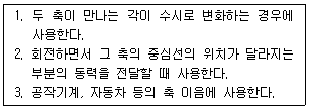
- 유니버셜 조인트
- 슬리브 커플링
- 올덤 커플링
- 플렉시블 조인트
(정답률: 65%)
6. 평평한 금속판재를 펀치로 다이 공동부에 밀어 넣어 원통형이나 각통형 제품을 만드는 가공은?
- 엠보싱
- 벌징
- 드로잉
- 트리밍
(정답률: 46%)
7. 원형 파이프 유동에서 난류로 판단할 수 있는 기준 레이놀즈 수(Re)는?
- Re＞600
- Re＞2100
- Re＞3000
- Re＞4000
(정답률: 24%)
8. 나사에 대한 설명으로 틀린 것은?
- 미터나사의 피치는 mm단위이다.
- 체결용 나사에는 주로 삼각나사가 사용된다.
- 운동용 나사는 사각나사, 사다리꼴 나사 등이 사용된다.
- 사다리꼴 나사에서 미터계는 29°, 인치계는 30°의 나사산 각을 갖는다.
(정답률: 60%)
9. 다음 설명에 해당하는 재료는?
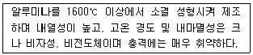
- 세라믹
- 다이아몬드
- 유리섬유강화수지
- 탄소섬유강화수지
(정답률: 68%)
10. 그림과 같이 직격 10cm의 원형 단면을 갖는 외팔보에서 굽힘하중 P1만 작용할 때의 굽힘응력은 인장하중 P2만 작용할 때의 응력의 약 몇 배가 되는가? (단, P1=P2=10kN이다.)
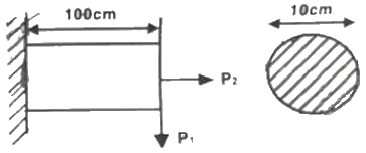
- 54
- 64
- 74
- 80
(정답률: 18%)
11. 밀링작업에서 분할대를 사용한 분할법이 아닌 것은?
- 단식 분할
- 복식 분할
- 직접 분할
- 차동 분할
(정답률: 36%)
12. 원형재료의 외경에 수나사를 가공하는 공구는?
- 탭
- 다이스
- 리머
- 바이스
(정답률: 46%)
13. 주조품 제조 시 주물의 형상이 대형으로 구조가 간단하고 점토로 채워서 만들며 정밀한 주형 제작이 곤란한 원형은?
- 잔형
- 회전형
- 골격형
- 매치 플레이트형
(정답률: 50%)
14. 내과 외경이 거의 같은 중공 원형단면의 축을 얇은 벽의 관이라 한다. 이 때 비틀림 모멘트를 T, 평균 중심선의 반지름 r, 벽의 두께 t, 관의 길이를 ℓ이라 할 때, 비틀림 각을 표현한 식이 아닌 것은? (단, 평균 중심선에 둘러쌓인 면적(A)=πr2, 평균 중심선의 길이(S)=2πr, 극관성 모멘트=Ip, 전단탄성계수=G, 전단응력=r이다.)
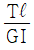
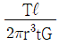
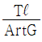
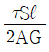
(정답률: 39%)
15. 금속재료를 고온에서 장시간 외력을 가하면 시간의 흐름에 따라 변형이 증가하게 되는데 이러한 현상은?
- 열응혁
- 피로한도
- 탄성에너지
- 크리프
(정답률: 58%)
16. 다음 금속재료중 시효경화 현상이 발생하는 합금은?
- 슈퍼 인바
- 니켈-크롬
- 알루미늄-구리
- 니켈-청동
(정답률: 41%)
17. 웜 기어(worm gear)의 장점으로 틀린 것은?
- 소음과 진동이 적다.
- 역전을 방지할 수 있다.
- 큰 감속비를 얻을 수 있다.
- 추력하중이 발생하지 않고 효율이 좋다.
(정답률: 50%)
18. 일반적으로 재료의 안전율을 구하는 식은?
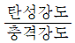
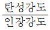
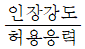
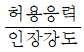
(정답률: 60%)
19. 액추에이터의 유입압력이 50kgf/cm2, 액추에이터의 유출압력(유압펌프로 흡입되는 압력)이 5kgf/cm2이고, 유량은 15cm3/s, 효율이 0.9일 때 펌프의 소요동력은 약 몇 kW인가?
- 0.071
- 0.1
- 0.15
- 0.2
(정답률: 25%)
20. 피복아크용접에서 직류 정극성을 이용하여 용접하였을 때 특징으로 옳은 것은?
- 미드 폭이 좁다.
- 모재의 용입이 얕다.
- 용접봉의 녹음이 빠르다.
- 박판, 주철, 비철금속의 용접에 주로 쓰인다.
(정답률: 34%)
2과목: 기계열역학
21. 피스톤-실린더 장치에 들어있는 100kPa, 27℃의 공기가 600kPa까지 가역단열과정으로 압축된다. 비열비가 1.4로 일정하다면 이 과정 동안에 공기가 받은 일(kJ/kg)은? (단, 공기의 기체상수는 0.287kK/(kgㆍK)이다.)
- 263.6
- 171.8
- 143.5
- 116.9
(정답률: 26%)
22. 열역학적 관점에서 다음 장치들에 대한 설명으로 옳은 것은?
- 노즐은 유체를 서서히 낮은 압력으로 팽창하여 속도를 감속시키는 기구이다.
- 디퓨저는 저속의 유체를 가속하는 기구이며, 그 결과 유체의 압력이 증가한다.
- 터빈은 작동유체의 압력을 이용하여 열을 생성하는 회전식 기계이다.
- 압축기의 목적은 외부에서 유입된 동력을 이용하여 유체의 압력을 높이는 것이다.
(정답률: 53%)
23. 1kW의 전기히터를 이용하여 101kPa, 15℃의 공기로 차 있는 100m3의 공간으로 난방하려고 한다. 이 공간은 견고하고 밀폐되어 있으며 단열되어 있다. 히터를 10분 동안 작동시킨 경우, 이 공간의 최종온도(℃)는? (단, 공기의 정적비열은 0.718kg/kgㆍK이고, 기체상수는 0.287kJ/kgㆍK이다.)
- 181.1
- 21.8
- 25.3
- 29.4
(정답률: 46%)
24. 그림과 같은 공기표준 브레이톤(Brayton) 사이클에서 작동유체 1kg당 터빈 일(kJ/kg)은? (단, T1=300K, T2=475.1K, T3=1100K, T4=694.5K이고, 공기의 정압비열과 정적비열은 각각 1.0035kJ/(kgㆍK)이다.)
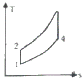
- 290
- 407
- 448
- 627
(정답률: 43%)
25. 공기 10kg이 압력 200kPa, 체적 5m3인 상태에서 압력 400kPa, 온도 300℃인 상태로 변한 경우 최종 체적(m3)은 얼마인가? (단, 공기의 기체상수는 0.287kJ/kgㆍK이다.)
- 10.7
- 8.3
- 6.8
- 4.1
(정답률: 21%)
26. 랭킨 사이클에서 보일러 입구 엔탈피 192.5kJ/kg, 터빈 입구 엔탈피 3002.5kJ/kg, 응축기 입구 엔탈피 2361.8kJ/kg일 때 열효율(%)은? (단, 펌프의 동력은 무시한다.)
- 20.3
- 22.8
- 25.7
- 29.5
(정답률: 52%)
27. 이상기체 1kg을 300K, 100kPa에서 500K까지 "PV=일정“의 과정(n=1.2)을 따라 변화시켰다. 이 기체의 엔트로피 변화량(kJ/K)은? (단, 기체의 비열비는 1.3, 기체상수는 0.287kJ/(kgㆍK)이다.)
- -0.244
- -0.287
- -0.344
- -0.373
(정답률: 30%)
28. 보일러에 온도 40℃, 엔탈피 167kJ/kg인 물이 공급되어 온도 350℃, 엔탈피 3115kJ/kg인 수증기가 발생한다. 입구와 출구에서의 유속은 각각 5m/s, 50m/s이고, 공급되는 물의 양이 2000kg/h일 때, 보일러에 공급해야 할 열량은(kW)은? (단, 위치에너지 변화는 무시한다.)
- 631
- 832
- 1237
- 1638
(정답률: 13%)
29. 이상적인 냉동사이클에서 응축기 온도가 30℃, 증발기 온도가 -10℃일 때 성적계수는?
- 4.6
- 5.2
- 6.6
- 7.5
(정답률: 35%)
30. 압력 1000kPa, 온도 300℃ 상태의 수증기(엔탈피 3⑤1.15kJ/kg, 엔트로피 7.1228kJ/kgㆍK)가 증기터빈으로 들어가서 100kPa 상태로 나온다. 터빈의 출력 일이 370kJ/kg일 때 터빈의 효율(%)은?
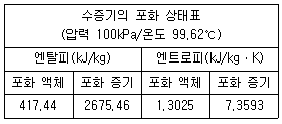
- 15.6
- 33.2
- 66.8
- 79.8
(정답률: 9%)
31. 열역학 제2법칙에 대한 설명으로 틀린 것은?
- 효율이 100%인 열기관은 얻을 수 없다.
- 제2종의 영구 기관은 작동 물질의 종류에 따라 가능하다.
- 열은 스스로 저온의 물질에서 고온의 물질로 이동하지 않는다.
- 열기관에서 작동 물질이 일을 하게 하려면 그 보다 더 저온인 물질이 필요하다.
(정답률: 48%)
32. 단열된 가스터빈의 입구 측에서 압력 2MPa 온도 1200K인 가스가 유입되어 출구 측에서 압력 100kPa, 온도 600K로 유출된다. 5MW의 출력을 얻기 위해 가스의 질량유량(kg/s)은 얼마이어야 하는가? (단, 터빈의 효율은 100%이고, 가스의 정압비열은 1.12kJ(kgㆍK)이다.)
- 6.44
- 7.44
- 8.44
- 9.44
(정답률: 36%)
33. 실린더 내의 공기가 100kPa, 20℃ 상태에서 300kPa이 될 때까지 가역단열 과정으로 압축된다. 이 과정에서 실린더 내의 계에서 엔트로피의 변화(kJ/(kgㆍK))는? (단, 공기의 비열비(K)는 1.4이다.)
- -1.35
- 0
- 1.35
- 13.5
(정답률: 31%)
34. 다음 중 가장 큰 에너지는?
- 100kW 출력의 엔진이 10시간 동안 한 일
- 발열량 10000kJ/kg의 연료를 100kg연소시켜 나오는 열량
- 대기압 하에서 10℃의 물 10m3를 90℃로 가열하는 데 필요한 열량(단, 물의 비열은 4.2kJ/(kgㆍK)이다.)
- 시속 100km로 주행하는 총 질량 2000kg인 자동차의 운동에너지
(정답률: 38%)
35. 다음은 시스템(계)과 경계에 대한 설명이다. 옳은 내용을 모두 고른 것은?
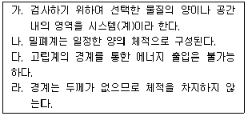
- 가, 다
- 나, 라
- 가, 다, 라
- 가, 나, 다, 라
(정답률: 49%)
36. 펌프를 사용하여 150kPa, 26℃의 물을 가역단열과정으로 650kPa까지 변화시킨 경우, 펌프의 일(kJ/kg)은? (단, 26℃의 포화액의 비체적은 0.001m3/kg이다.)
- 0.4
- 0.5
- 0.6
- 0.7
(정답률: 38%)
37. 용기 안에 있는 유체의 초기 내부에너지는 700kJ이다. 냉각과정 동안 250kJ의 열을 잃고, 용기 내에 설치된 회전날개로 유체에 100kJ의 일을 한다. 최종상태의 유체의 내부에너지(kJ)는 얼마인가?
- 350
- 450
- 550
- 650
(정답률: 48%)
38. 준평형 정적과정을 거치는 시스템에 대한 열전달량은? (단, 운동에너지와 위치에너지의 변화는 무시한다.)
- 0이다.
- 이루어진 일량과 같다.
- 엔탈피 변화량과 같다.
- 내부에너지 변화량과 같다.
(정답률: 34%)
39. 300L 체적의 진공인 탱크가 25℃, 6MPa의 증기를 공급하는 관에 연결된다. 밸브를 열어 탱크 안의 공기 압력이 5MPa이 될 때까지 공기를 채우고 밸브를 닫았다. 이 과정이 단열이고 운동에너지와 위치에너지의 변화를 무시한다면 탱크 안의 공기의 온도(℃)는 얼마가 되는가? (단, 공기의 비열비는 1.4이다.)
- 15
- 25.0
- 84.4
- 144.2
(정답률: 19%)
40. 초기 압력 100kPa, 초기 체적 0.1m3인 기체를 버너로 가열하여 기체 체적이 정압과정으로 0.5m3이 되었다면 이 과정 동안 시스템이 외부에 한 일(kJ)은?
- 10
- 20
- 30
- 40
(정답률: 43%)
3과목: 자동차기관
41. 희박연소(Lean Burn) 엔진에 대한 설명으로 옳은 것은?
- 모든 운전영역에서 터보장치가 작동될 수 있는 기관이다.
- 실린더로 들어가는 공기량을 줄이기 위해 스월 컨트롤 밸브를 사용하기도 한다.
- 이론 공연비보다 더 희박한 공연비 상태에서도 양호한 연소가 가능한 기관이다.
- 기존 엔진보다 연료사용을 적게 하기 위해 실린더로 들어가는 공기와 연료량을 모두 줄인다.
(정답률: 66%)
42. 연료의 휘발성을 표시하는 방법이 아닌 것은?
- 리드 증기압
- CVS-75 모드
- ASTM 증류곡선
- 기체/액체의 비율
(정답률: 50%)
43. 피스톤 슬랩(piston slap)현상을 방지할 목적으로 사용되는 피스톤은?
- 오프셋 피스톤
- 스플릿 피스톤
- 오토서믹 피스톤
- 솔리드 스커트 피스톤
(정답률: 64%)
44. 기관에서 베어링 구비조건이 아닌 것은?
- 열전도성
- 내폭성
- 내 부식성
- 하중 부담성
(정답률: 53%)
45. 가솔린기관의 전자제어장치에서 공전속도 조절기(ISC)의 종류가 아닌 것은?
- 점화 시기 방식
- 스텝 모터 방식
- ISC-서보 방식
- 선형 솔레노이드 방식
(정답률: 57%)
46. 냉각장치에서 보텀(bottom) 바이패스 방식이 인라인(in-line) 바이패스 방식에 비해 가지는 장점으로 틀린 것은?
- 기관이 정지했을 때 냉각수의 보온성능이 좋다.
- 수온조절기가 민감하게 작동하여 오버슈트(overshoot)가 크다.
- 수온조절기의 이상 작동이 적기 때문에 기관내부의 온도가 안정된다.
- 수온조절기가 열렸을 때 바이패스(by-pass) 회로를 닫기 때문에 냉각효과가 좋다.
(정답률: 57%)
47. 커먼레일 방식의 디젤 연료 라인에서 기계식 저압 연료펌프를 이용한 경우, 저압 연료 라인의 공기빼기 작업을 위한 구성품은?
- 프라이밍 펌프
- 연료가열 장치
- 오버플로 밸브
- 연료압력 조절밸브
(정답률: 57%)
48. 매 시간당 108kgf의 연료를 소비하여 500ps를 발생하는 디젤기관에서 연료의 저위발열량이 1⑤00kcal/kgf일 때 열효율은 약 몇 %인가?
- 22.65
- 25.35
- 27.88
- 32.35
(정답률: 46%)
49. 다음 중 실린더 헤드 볼트를 조일 때 마지막으로 사용하는 공구로 가장 적절한 것은?
- 복스 렌치
- 소켓 렌치
- 토크 렌치
- 오픈 엔드 렌치
(정답률: 78%)
50. 기관에서 연소실의 혼합기가 농후해지는 주요 원인으로 옳은 것은?
- 소음기의 누설
- 흡기관의 균열
- 서지 탱크의 균열
- 공기 청정기의 막힘
(정답률: 60%)
51. 기관에서 흡기 및 배기 밸브의 서징현상방지책으로 틀린 것은?
- 스프링 상수 값을 크게 하여 사용한다.
- 밸브 스프링의 고유진동수를 높게 한다.
- 부등 피치 스프링이나 원추형 스프링을 사용한다.
- 고유진동수가 다른 2개의 스프링을 함께 사용한다.
(정답률: 53%)
52. 가솔린기관의 전자제어 연료분사 장치에서 사동 시 분사시간 결정과 관계있는 것은?
- 엔진 회전수
- 냉각수 온도
- 유효 분사시간
- 흡입 공기의 중량
(정답률: 32%)
53. 전자제어 가솔린 엔진의 노크센서에 대한 설명으로 틀린 것은?
- 노크센서를 설치하면 기관의 내구성이 좋아진다.
- 노크 신호가 검출되면, 엔진은 점화시기를 진각시킨다.
- 노크센서를 부착함으로써 기관 회전력 및 출력이 증대된다.
- 피에조 조사를 이용하여 연소 중에 실린더 내에 이상 진동을 검출한다.
(정답률: 52%)
54. 총배기량 1800cc인 기관의 회전 저항 토크가 61kgfㆍm일 때 기동전동기의 피니언기어 잇수가 12, 기관의 플라이 휠 링기어 잇수가 120이라면 이 기관을 기동하는데 필요한 기동전동기의 최소 회전 토크는 몇 kgfㆍm인가?(오류 신고가 접수된 문제입니다. 반드시 정답과 해설을 확인하시기 바랍니다.)
- 0.45
- 0.60
- 0.75
- 0.90
(정답률: 51%)
55. 기본 점화시기 및 연료 분사시기와 가장 밀접한 관계가 있는 센서는?
- 수온 센서
- 대기압 센서
- 홉기온 센서
- 크랭크 각 센서
(정답률: 56%)
56. 가솔린기관 전자제어 연료분사 장치의 보정계수가 아닌 것은?
- 기관온도에 따른 보정계수
- 학습제어에 의한 보정계수
- 저부하ㆍ저회전 시의 보정계수
- 이론 공연비로의 피드백 보정계수
(정답률: 47%)
57. LPG차량에서 연료 압력 조절기 유닛의 주요 구성품이 아닌 것은?
- 홉기 온도 센서
- 가스 온도 센서
- 연료 압력 조절기
- 연료 차단 솔레노이드 밸브
(정답률: 50%)
58. 지압선도를 보고 파악할 수 있는 요소가 아닌 것은?
- 압력 상승 속도
- 점화시기
- 연소의 이상 유무
- 기관 회전수
(정답률: 50%)
59. 디젤기관의 질소산화물(NOx) 저감을 위한 배기가스 재순환장치에서 배기가스 중의 산소농도를 측정하여 EGR밸브를 보다 정밀하게 제어하기 위해 사용되는 센서는?
- 노크 센서
- 차압 센서
- 배기 온도 센서
- 광역 산소 센서
(정답률: 59%)
60. 전자제어 가솔린 분사장치의 특징이 아닌 것은?
- 유해 배출가스를 줄일 수 있다.
- 냉간 시동성을 향상시킬 수 있다.
- 베이퍼 록 현상이 쉽게 발생한다.
- 구조가 복잡하고 가격이 비싸다.
(정답률: 67%)
4과목: 자동차새시
61. 자동차 클러치에 작용하는 면압이 60kgf/cm2이고, 클러치판의 외경 40cm, 내경 20cm인 경우 클러치의 전달회전력(kgfㆍcm)은? (단, 단판클러치이고 마찰계수는 0.2이다.)
- 113097
- 169646
- 282743
- 565486
(정답률: 33%)
62. 공기 브레이크의 특징에 대한 설명으로 틀린 것은?
- 공기압축기 구동에 따른 차량 동력소모가 발생한다.
- 페달을 밟는 양에 따라 제동력이 조절된다.
- 차량이 중량에 큰 영향을 받지 않고 사용할 수 있다.
- 미세한 공기누설에도 제동력이 크게 저하될 위험이 있다.
(정답률: 54%)
63. 듀얼클러치 변속기의 주요 구성부품이 아닌 것은?
- 토크 컨버터
- 기어 액추에이터
- 더블 클러치
- 클러치 액추에이터
(정답률: 52%)
64. 전자제어 자동변속기에 하이백(HIVEC) 제어의 일반적인 특징으로 틀린 것은?
- 학습 제어
- 전체 운전영역의 최적 제어
- 신경망 제어
- 중량화에 따른 변속감 향상
(정답률: 38%)
65. 차량중량 3500kgf의 차량이 구배 8%의 경사로를 25km/h의 속도로 올라갈 때 구름저항/구배저항의 비는? (단, 구름저항계수는 0.03)
- 1/2
- 3/4
- 3/8
- 1
(정답률: 56%)
66. 자동차규칙에 의거하여 측면보호대를 설치하여야 하는 자동차는?
- 차량총중량 8톤 이상이거나 최대적재량 4톤 이상인 화물자동차
- 차량총중량 10톤 이상이거나 최대적재량 5톤 이상인 화물자동차
- 차량총중량 8톤 이상이거나 최대적재량 5톤 이상인 화물자동차 특수자동차 및 연결자동차
- 차량총중량 10톤 이상이거나 최대적재량 5톤 이상인 화물자동차ㆍ특수자동차 및 연결자동차
(정답률: 48%)
67. 토크컨버터가 유체 커플링과 마찬가로 토크전달 기능만을 수행하며, 스테이터의 일방향클러치를 프리휠리 시키는 작동점은?
- 실속 포인트
- 클러치 포인트
- 제동 포인트
- 컨버터 포인트
(정답률: 57%)
68. 자동차가 현가장치에 이용되고 있는 공기스프링의 장점이 아닌 것은?
- 하중에 관계없이 차고가 일정하게 유지되어 차체의 기울기가 적다.
- 공기자체가 감쇠성에 의해 고주파 진동을 흡수한다.
- 하중에 관계없이 고유진동이 거의 일정하게 유지된다.
- 제동 시 관성력을 흡수하므로 제동거리가 짧아진다.
(정답률: 49%)
69. 차체 자세제어 장치의 주요 제어요소가 아닌 것은?
- 자동감속 제어
- EPB 제어
- 요 모멘트 제어
- ABS 제어
(정답률: 43%)
70. 자동변속기 제어장치에서 ECU와 TCU의 통신 내용에 대한 설명 중 틀린 것은?
- 흡입공기량:댐퍼클러치 및 변속시기 제어
- 스로틀 포지션 센서:변속단 설정 및 실행, 급가속 제어
- 냉각수 온도 신호:초기 변속단 및 유압설정 신호
- 주행속도 신호:변속기 입력축 및 출력축 속도 센서의 고장을 판정할 때 참조 신호
(정답률: 46%)
71. 무단변속기 전자제어에서 유압 제어 장치의 종류가 아닌 것은?
- 변속비 제어
- 추진축 제어
- 라인 압력 제어
- 댐퍼 클러치 제어
(정답률: 49%)
72. 일반적인 유압 브레이크 특징에 대한 설명으로 틀린 것은?
- 마찰 손실이 적다.
- 폐달의 조작력이 작아도 된다.
- 제동력이 모든 바퀴에 동일하게 작용한다.
- 유압회로에 공기가 침입하여도 제동력에 변화가 없다.
(정답률: 62%)
73. ABS시스템에 이상이 발생했을 경우에 대한 설명으로 옳은 것은?
- 휠 스피드 센서 1개가 고장인 경우에는 ABS경고등이 점등되고 EBD는 제어된다.
- 유압펌프 모터가 고장인 경우에는 경고등이 점등괴고 EBD는 제어되지 않는다.
- 솔레노이드 밸브와 컴퓨터가 고장인 경우에는 EBD, ABS 모두 제어된다.
- 휠 스피드 센서 2개 이상 고장시 EBD는 제어된다.
(정답률: 41%)
74. 다음 중 수동변속기에서 기어가 이중으로 물릴 때 고장원인으로 적절한 것은?
- 인터로크 장치의 고장
- 싱크로나이저 링 기어의 소손
- 싱크로나이저 링의 내측 마모
- 싱크로나이저 키의 돌출부 마모
(정답률: 46%)
75. 유압식 동력 조향장치에서 직진할 경우 유압펌프 내의 피스톤 운동 상태는?
- 동력 피스톤이 왼쪽으로 움직여서 왼쪽으로 조향한다.
- 동력 피스톤이 오른쪽으로 움직여서 오른쪽으로 조향한다.
- 동력 피스톤은 좌ㆍ우실의 유압이 같으므로 정지하고 있다.
- 동력 피스톤은 리액션 스프링을 압축하여 왼쪽으로 이동한다.
(정답률: 64%)
76. ABS의 고장진단 시 점검 사항으로 거리가 먼 것은?
- 기관의 출력 상태
- ABS 경고등 점등 상태
- 휠 스피드 센서와 톤 휠 사이의 간극
- 하이드롤릭 유닛의 작동음 유무
(정답률: 58%)
77. 자동차에서 캠버(camber)를 설치하는 가장 중요한 목적은?
- 수직 하중에 의한 차축의 휨을 방지한다.
- 차량주행의 직진성을 월등히 상승시킨다.
- 타이어 교환 시 원활한 탈착이 가능하게 한다.
- 조향 핸들의 조작을 무겁게 하여 주행 안정성을 부여한다.
(정답률: 57%)
78. 전자제어 현가장치에서 차고센서의 작동원리로 옳은 것은?
- G 센서 방식
- 가변 저항 방식
- 칼만 와류 방식
- 앤티 쉐이크 방식
(정답률: 40%)
79. 다음 중 기어 변속이 잘 되지 않는 원인으로 틀린 것은?
- 클러치 오일의 유무
- 싱크로나이저 링의 소착
- 싱크로나이저 링의 마모
- 클러치 페달의 자유 유격이 작을 때
(정답률: 57%)
80. 자동차의 주행성능 선도에서 알 수 없는 것은?
- 여유 구동력
- 최고 주행속도
- 최소 유해 배출량
- 차속에 따른 엔진 회전수
(정답률: 63%)
5과목: 자동차전기
81. 하이브리드 모터의 위치 및 회전수를 검출하는 것은?
- 엔코더
- 레졸버
- 크랭크 각 센서
- 출력축 속도 센서
(정답률: 53%)
82. 조기 점화에 대한 저항력이 매우 크고, 고속ㆍ고부하용 엔진에 적합한 점화플러그 형식은?
- 열형
- 냉형
- 온형
- 보통형
(정답률: 56%)
83. 자기 인덕턴스 0.7H의 코일에 전류가 0.1초간에 2A의 변화가 있었다면, 몇 V의 유도기전력이 발생되는가?
- 10
- 12
- 14
- 16
(정답률: 40%)
84. HEI 점화장치에서 1차 전류를 단속하는 장치는?
- 노킹 센서
- 점화 코일
- 점화 플러그
- 파워 트랜지스터
(정답률: 60%)
85. 자동차의 충전장치 회로에서 아날로그형 멀티미터로 트리오 다이오드를 점검한 내용으로 옳은 것은?
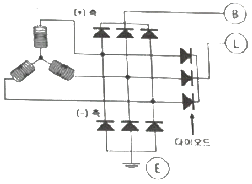
- 시험기의 적색, 흑색단자를 교대해서 다이오드 (+), (-) 단자에 점검했을 때 양방향 모두 비통전이면 정상이다.
- 시험기의 적색, 흑색 단자를 교대해서 다이오드 (+), (-) 단자에 점검했을 때 한쪽 방향만 통전되면 단락된 것이다.
- 시험기의 적색, 흑색단자를 교대해서 다이오드 (+), (-) 단자에 점검했을 때 한쪽 방향만 통전되면 단선된 것이다.
- 시험기에 적색, 흑색단자를 교대해서 다이오드 (+), (-) 단자에 점검했을 때 양방향 모두 통전되면 단락된 것이다.
(정답률: 49%)
86. 12V, 4W 전구 1개와 24V, 18W 전구 1개를 12V 배터리에 직렬로 연결하였을 때의 설명으로 옳은 것은? (단, 전구의 필라멘트 저항값은 온도에 따른 변화가 없다.)
- 12V, 4W 전구가 끊어진다.
- 양쪽 전구의 전력소비가 똑같다.
- 12V, 4W 전구가 전력소비가 더 크다.
- 12V, 18W 전구가 전력소비가 더 크다.
(정답률: 42%)
87. 산소센서가 비정상일 경우 발생할 수 있는 현상이 아닌 것은?
- 연료소비가 감소한다.
- 주행 중 가속력이 떨어진다.
- 공회전할 때 기관 부조현상이 있다.
- 배기가스 중 유해물질의 발생량이 늘어난다.
(정답률: 58%)
88. 자동차법규상 방향지시등 설치 및 광도기준에 관한 내용으로 틀린 것은?
- 방향지시등은 1분간 90±30회로 점멸하는 구조일 것
- 견인자동차와 피견인자동차의 방향지시등은 개별로 작동하는 구조일 것
- 방향지시기를 조작한 후 1초 이내에 점등되어야 하며, 1.5초 이내에 소등할 것
- 하나의 방향지시등에서 합성 외의 고장이 발생된 경우 다른 방향지시등은 작동되는 구조일 것
(정답률: 36%)
89. 운전 중 제동 시점이 늦거나 제동력이 충분히 확보되지 않아 발생할 수 있는 사고에 대한 충돌이나 피해를 경감하기 위한 시스템은?
- 자동 긴급 제동 시스템
- 긴급 정지신호 시스템
- 안티 록 브레이크 시스템
- 전자식 파킹 브레이크 시스템
(정답률: 68%)
90. 축전지 수명단축의 원인이 아닌 것은?
- 방전 전압의 감소
- 양극판 격자의 산화작용
- 충전부족과 설페이션 현상
- 과충전으로 인한 온도 상승, 격리판의 열화
(정답률: 61%)
91. 전자 배전 점화장치(DLI)의 주요 구성부품이 아닌 것은?
- G 센서
- 파워 TR
- 점화코일
- 크랭크 축 위치센서
(정답률: 59%)
92. 고전압 배터리 관리 시스템의 메인 릴레이를 작동시키기 전에 프리 차지 릴레이를 작동시키는데 프리 차지 릴레이의 기능이 아닌 것은?
- 등화장치 보호
- 고전압 회로 보호
- 타 고전압 부품 보호
- 고전압 메인 퓨즈, 부스바, 와이어 하네스 보호
(정답률: 62%)
93. 배터리의 전해액 비중을 측정한 값이 1.275이다. 표준온도의 비중으로 환산한 값은? (단, 전해액의 온도는 25℃이다.)
- 1.2400
- 1.2715
- 1.2785
- 1.3100
(정답률: 47%)
94. 소음ㆍ진동관리법 시행규칙에 의한 운행차 정기검사의 소음기준 및 방법에 관한 설명으로 옳은 것은?
- 자동차소음의 2회 이상 측정치 중 가장 큰 값을 최종 측정치로 한다.
- 자동차의 원동기를 가동시킨 정차상태에서 자동차의 경음기를 5초 동안 작동시켜 측정한다.
- 암소음 측정은 각 측정 항목별로 측정 직전 또는 직후에 연속하여 5초 동안 실시하며, 순간적인 충격음 또한 암소음으로 취급한다.
- 자동차의 변속장치를 파킹 위치로 하고 정지가동상태에서 원동기의 최고 출력 시의 50% 회전속도로 5초 동안 운전하여 최대소음도를 측정한다.
(정답률: 35%)
95. 상호 유도 작용에 대한 설명으로 가장 적절한 것은?
- 도체에 전류를 흐르게 하면 자장이 발생하는 현상
- 자석이 아닌 물체가 자계 내에서 자기력의 영향을 받아 자기를 띠는 현상
- 코일에 전류를 흐르게 하면 코일의 반대 방향에 유도 전압이 발생하는 현상
- 코일에 자력선을 변화시키면 다른 코일에 자력선의 변화를 방해하려는 기전력이 발생되는 현상
(정답률: 42%)
96. ABS장치의 슬립율을 계산하는 식으로 옳은 것은?
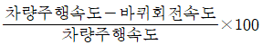
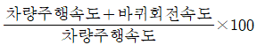
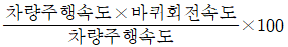
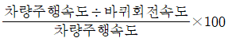
(정답률: 52%)
97. 자화된 철편에 외부자력을 제거한 후에도 자력이 남아있는 현상은?
- 자기 포화 현상
- 상호 유도 현상
- 전자 유도 현상
- 자기 하스테리시스 현상
(정답률: 50%)
98. 에어컨 스위치 회로에 대한 설명으로 옳은 것은?
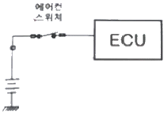
- 입력신호는 아날로그 회로이다.
- ECU 내부는 TTL 회로 방식이다.
- ECU 내부는 풀업 저항이 걸려 있다.
- ECU 내부는 CMOS형 회로 방식이다.
(정답률: 47%)
99. 전자제어 와이퍼 시스템에서 레인 센서와 구동 유닛의 작동 특성으로 틀린 것은?
- 레인 센서는 LED와 포토다이오드로 비의 양을 검출한다.
- 비의 양은 레인 센서에서 감지, 구동유닛은 와이퍼 속도와 구동시간을 조절한다.
- 레인센서 및 구동유닛은 다기능스위치의 통제를 받지 않고 종합제어장치 회로와 별도로 작동한다.
- 유리 투과율을 스스로 보정하는 서보회로가 설치되어 있어 앞 창유리의 투과율에 관계없이 일정하게 빗물을 검출하는 기능이 있다.
(정답률: 49%)
100. 에어컨 장치에서 컴프레서 마그네틱 클러치의 작동불량 원인이 아닌 것은?
- 냉매압력 불량
- 블로워 모터 불량
- 냉매압력 스위치 불량
- 클러치 필드코일 불량
(정답률: 59%)